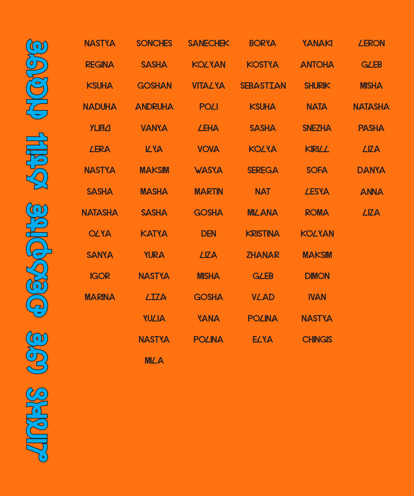
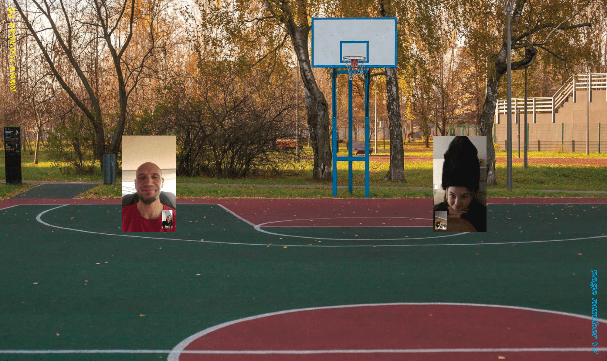
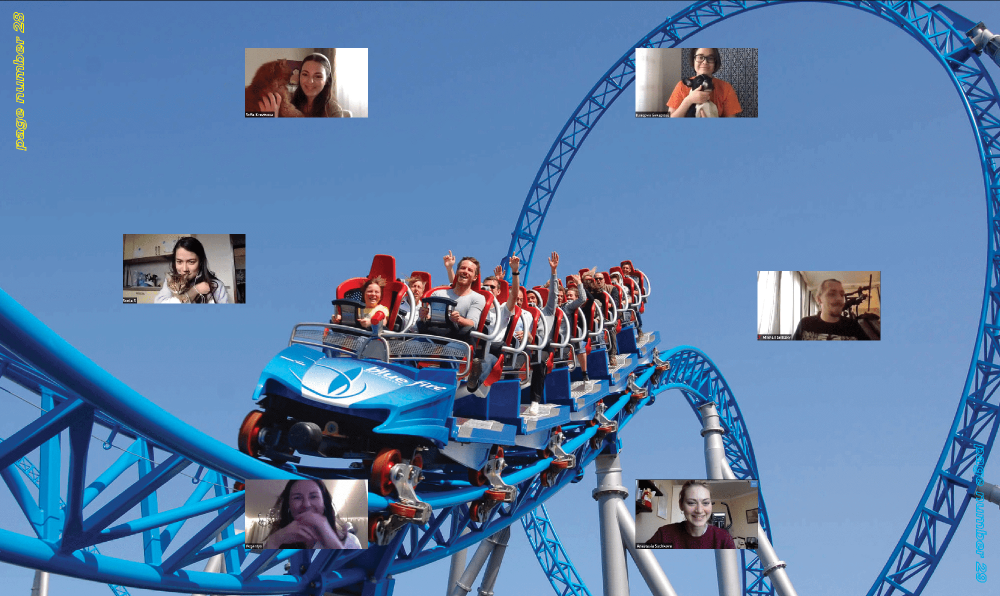
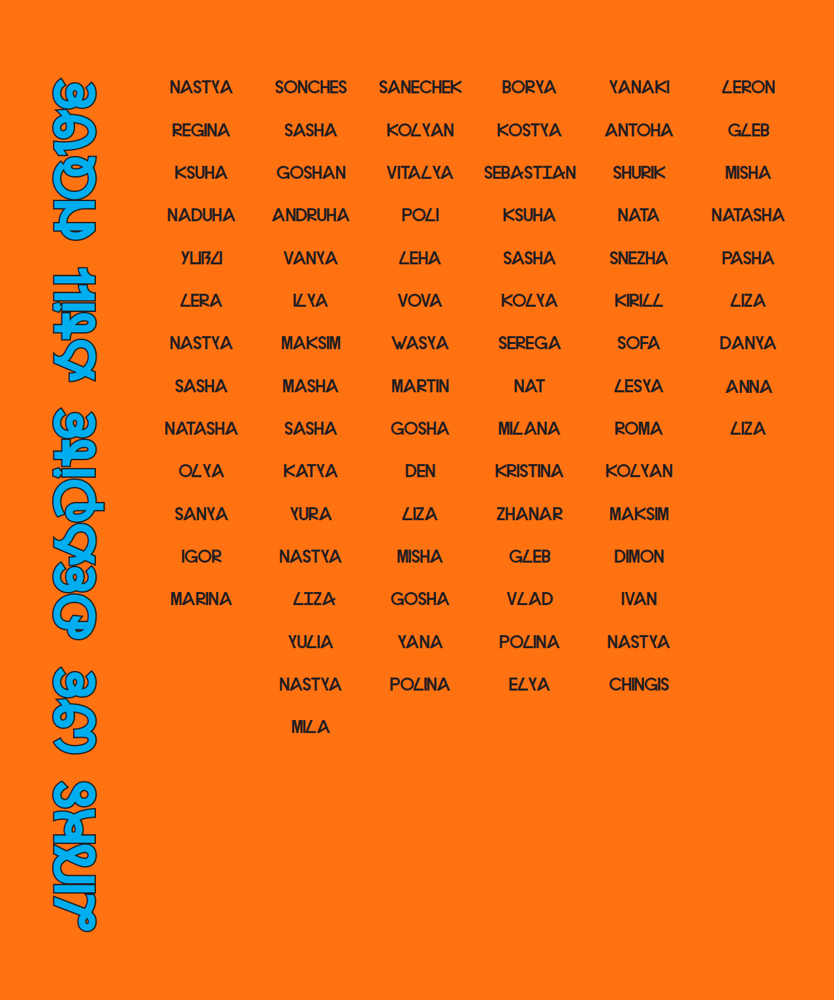
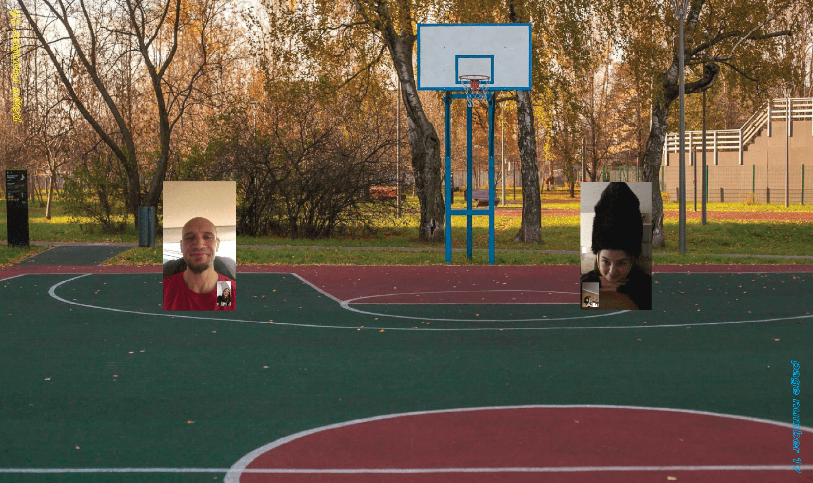
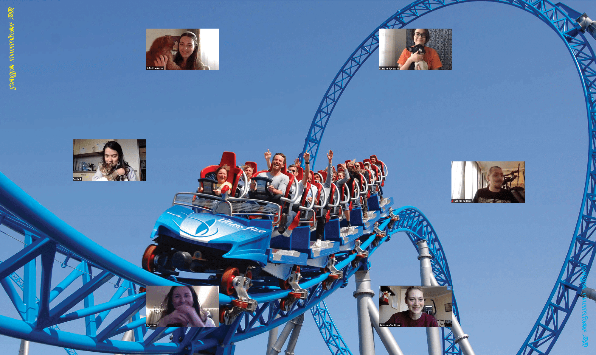

Project
Process book
Beyond Matter — Tasha Shubina
Beginning as a research on individuality and an opposition to common beauty standards, due to the COVID-19 project’s topic spectrum has been widened. The worldwide quarantine and the strict restrictions made these topics to become vitally important. Being on a lockdown and alone made people, on one hand, think more about themselves and focus on self-acceptance and, on the other hand, value real communication and find ways to obtain it.
PUBLICATION # 1. ‘Subjective Normality’ — a photobook with personal stories of participants. Photos were supplemented with quotes. Each of the participants of the project sent a voice message, answering the questions about how society reacts to their looks. The idea behind it was not only to get opinions from people, but specifically to research the attitude of models towards this ‘assertion’. Is it important to them? How does this affect them personally and their lives in general? Do they add importance to these judgments?
PUBLICATION # 2. The second publication is dedicated to the issue of communication and the ways that we look at people we used to be close to in real life. ‘Links we despite still have’ illustrates that communication is an important part of our lives and people seek to improve it no matter what. The transition to the online space has changed the attitude towards communication, work and life. Screenshots from video conferences and private calls are placed on photographs of nature, empty city streets and clubs — places where we spent a lot of time together before the Covid-19 changed our usual way of life.
PUBLICATION # 3. The third book ’Self-portrait, Self-isolation, Self-acceptance’ is about being alone with yourself. During lockdown we are spending a lot of time by ourselves thinking about the goals, dreams, tracking our mood and habits. Usually we do not have so much time to turn inwards into ourselves and understand who we truly are and what we truly want.
The author of the project took four photoshoots of herself in different styles. On top of the photographs were placed screenshots from different social messengers. Some of them are quite funny, some of them were sent by strangers, some — by parents. But still all of that messages are a white noise.


 




